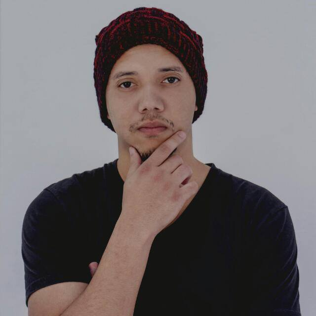

Sobre Mim
Me chamo Fabrício, tenho 28 anos e moro na cidade do Rio de Janeiro, onde cresci. Há cerca de um ano, venho me especializando, para atuar na Área da programação, o que será uma grande mudança na minha vida profissional.
Minha primeira formação profissional foi como técnico de eletrônica, desde meus 18 anos até hoje, e nesse longo caminho percebi que precisava de algo mais. Ao longo da minha carreira, tive contato com programação em um curso indicado e resolvi experimentar. A partir daí eu tive certeza que é a área que eu quero investir em minha carreira profissional.
Procuro sempre trazer as boas experiências e boas práticas que vivênciei nas empresas que trabalhei e agregar com o conhecimento técnico que venho adquirindo com a programação.
Por fim o meu objetivo é adquirir cada vez mais conhecimento exercendo a profissão em que escolhi para a vida, que sem dúvidas, é o caminho certo a percorrer.